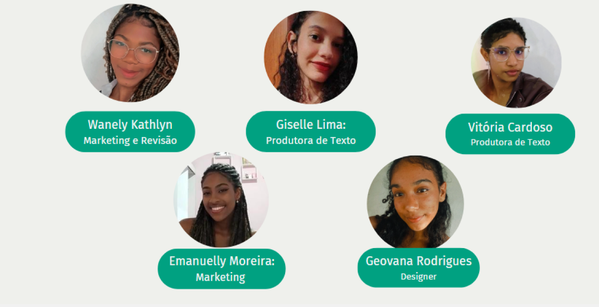

Buscamos auxiliar o indivíduo a desenvolver uma inteligência emocional,
através da superação de traumas recorrentes, sejam estes correlacionados com
a infância ou não, que afetam diretamente suas relações pessoais e sociais
da sua vida adulta.
Transtorno mental se caracteriza além da ansiedade e depressão como muitos
consideram, trata-se de uma indisposição cerebral que afeta a vida pessoal e
profissional do indivíduo podendo está associada também ao físico e ao
emocional.
Visamos explorar a Telepsicologia - uma forma de atendimento remoto com mais
comodidade que tende a ser tendência nos próximos anos. Assim, permitindo
observar como ao longo dos anos as profissões da área psicológica irão
precisar se adaptar para ajudar as pessoas a tratarem seus traumas e
promover maior harmonia e sucesso em suas respectivas profissões, evitando
crises de Burnet e ansiedade, por exemplo.
Pesquisa e Planejamento
Análises
Conteúdo Informativo

Pesquisa e Planejamento
Segundo
relatório da Organização Mundial da Saúde (OMS), mais de 86% da
população sofre algum tipo de transtorno
mental. Entretanto, mesmo tendo uma porcentagem elevada,
o tema ainda é um tabu na sociedade, sendo pouco discutido tanto pelos
indivíduos que possuem o transtorno quanto por seus amigos e
familiares.
Queremos contar com ajuda de psicólogos
comunitários que nos auxiliem no desenvolvimento e na execução do
projeto.
Análises
De acordo com a Editora Atena, os traumas psicológicos mais frequentes são:
Negligência emocional (25%), abuso emocional (9%), abuso sexual (33%), abuso
físico (25%) e violência doméstica (8%). Sendo assim, percebe-se a
necessidade de analisar mais a fundo as consequências de traumas gerados na
infância e como estes influenciam na vida adulta.
Nossa Equipe
Nosso Trabalho
Rede de profissionais qualificados na área da pscicologia.
Proporcionaremos o contato entre o usuário e um profissional qualificado que
possa ajudá-lo na identificação de qual transtorno a pessoa está lidando
Conteúdo
Informativo
ANSIEDADE
Um exemplo de texto rápido para construir o título do card e fazer preencher o conteúdo do card.